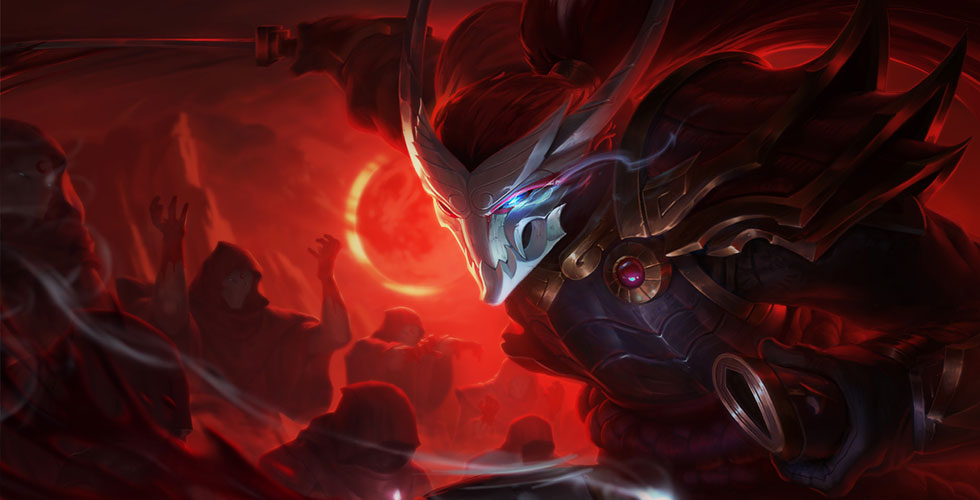
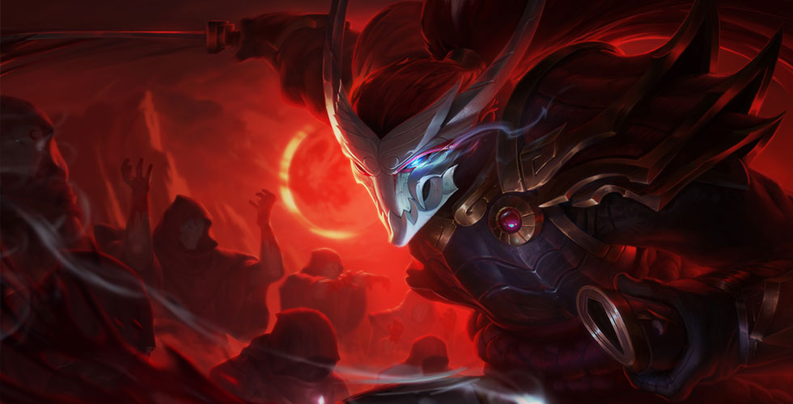

英雄联盟首页 英雄联盟首页 |
> 游戏资料 | > 全部英雄 | > 疾风剑豪 亚索 |


 



亚索的暴击几率翻倍。此外，亚索会在移动时积攒一层护盾。护盾会在他受到来自英雄或野怪的伤害时触发
召唤师峡谷
极地大乱斗


- -你可以将敌方小兵作为踏前斩的跳板，来追杀本已逃掉的敌人你也可以 直接突进到对方英雄身上，并将敌方小兵作为撤退时的跳板。
- - 在18级时，亚索的斩钢闪只需要从装备中获取 55% 攻击速度，即可 到达攻击速度上限。
- - 狂风绝息斩可以对着任何被击飞的目标施放，即使这个击飞效果是 你的友军造成的。
- - 斩钢闪的范围非常狭窄。尽可能靠边，就能躲过这招。
- - 当亚索的斩钢闪连续命中两次时，他的下次斩钢闪就会形成一道旋风。要观察他的增益栏，并且留心聆听相关音效，做好躲避这招的准备。
- - 亚索在发出旋风之后最为虚弱，可以趁机逼他交战。
- - 亚索的百折不屈的护盾只持续2秒。对他造成伤害即可将护盾触发。先等护盾消失，然后再开战。
| 中单之神-亚索 史诗级攻略 | 2017-06-13 |
| 来源：玩家投稿 | 评分： |
| 削弱后主Q还是主E？新版亚索技 | 2017-02-08 |
| 来源：兔玩 | 评分： |
| 亚索胜率历史最高！这样玩才是 | 2017-02-07 |
| 来源：21CD | 评分： |
| 亚索弱?是你不会玩！十招化身成 | 2017-02-04 |
| 来源：15W | 评分： |
| 外服亚索大神亲传十大进阶技巧 | 2017-01-05 |
| 来源：掌游宝 | 评分： |
| EQ闪 穿墙=无敌！亚索想秀只需 | 2016-12-27 |
| 来源： | 评分： |
| Faker亚索竟被击杀 职业选手的 | 2016-12-10 |
| 来源：17173 | 评分： |
| Faker用他难求一败!S7季前赛亚 | 2016-11-16 |
| 来源：游戏魅 | 评分： |
| 中路亚索三把多兰就暴走 新套路 | 2016-11-12 |
| 来源：17173 | 评分： |
| 削弱仍是最强上单：亚索这样玩 | 2016-09-10 |
| 来源：大咖 | 评分： |
| 亚索出冰锤？无敌！胜率第一出 | 2016-09-05 |
| 来源：15W | 评分： |